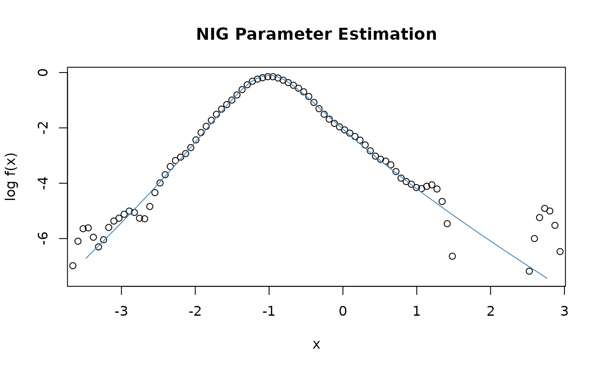

Fit of a Normal Inverse Gaussian Distribution
dist-nigFit.RdEstimates the parameters of a normal inverse Gaussian distribution.
Usage
nigFit(x, alpha = 1, beta = 0, delta = 1, mu = 0,
method = c("mle", "gmm", "mps", "vmps"), scale = TRUE, doplot = TRUE,
span = "auto", trace = TRUE, title = NULL, description = NULL, ...)Arguments
- alpha, beta, delta, mu
The parameters are
alpha,beta,delta, andmu:
shape parameteralpha; skewness parameterbeta,abs(beta)is in the range (0, alpha); scale parameterdelta,deltamust be zero or positive; location parametermu, by default 0. These is the meaning of the parameters in the first parameterizationpm=1which is the default parameterization selection. In the second parameterization,pm=2alphaandbetatake the meaning of the shape parameters (usually named)zetaandrho. In the third parameterization,pm=3alphaandbetatake the meaning of the shape parameters (usually named)xiandchi. In the fourth parameterization,pm=4alphaandbetatake the meaning of the shape parameters (usually named)a.barandb.bar.- description
a character string which allows for a brief description.
- doplot
a logical flag. Should a plot be displayed?
- method
a character string. Either
"mle", Maximum Likelihood Estimation, the default,"gmm"Gemeralized Method of Moments Estimation,"mps"Maximum Product Spacings Estimation, or"vmps"Minimum Variance Product Spacings Estimation.- scale
a logical flag, by default
TRUE. Should the time series be scaled by its standard deviation to achieve a more stable optimization?- span
x-coordinates for the plot, by default 100 values automatically selected and ranging between the 0.001, and 0.999 quantiles. Alternatively, you can specify the range by an expression like
span=seq(min, max, times = n), where,minandmaxare the left and right endpoints of the range, andngives the number of the intermediate points.- title
a character string which allows for a project title.
- trace
a logical flag. Should the parameter estimation process be traced?
- x
a numeric vector.
- ...
parameters to be parsed.
Value
an object from class "fDISTFIT".
Slot fit is a list, whose components depend on the method. See
"fDISTFIT" for the meaning of the most common
ones.
Here is an informal list of components for the various methods:
for mle: par, scale, estimate, minimum, code
plus components from nlminb()
plus additions from .distStandardErrors();
for gmm: only estimate;
for mps and vmps: estimate, minimum, error (s.e.'s), code.
Examples
## Simulate Random Variates
set.seed(1953)
s <- rnig(n = 1000, alpha = 1.5, beta = 0.3, delta = 0.5, mu = -1.0)
nigFit(s, alpha = 1, beta = 0, delta = 1, mu = mean(s), doplot = TRUE,
trace = FALSE)
#> Warning: NaNs produced

#>
#> Title:
#> Normal Inverse Gaussian Parameter Estimation
#>
#> Call:
#> .nigFit.mle(x = x, alpha = alpha, beta = beta, delta = delta,
#> mu = mu, scale = scale, doplot = doplot, span = span, trace = trace,
#> title = title, description = description)
#>
#> Model:
#> Normal Inverse Gaussian Distribution
#>
#> Estimated Parameter(s):
#> alpha beta delta mu
#> 1.6959724 0.3597793 0.5601027 -1.0446402
#>